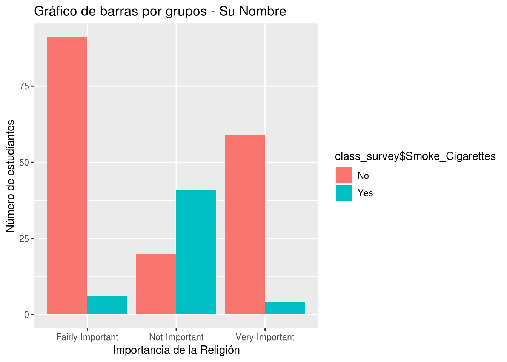

Tarea # 3
Fecha de entrega: Viernes 07 de septiembre de 2018. Al iniciar la clase.
Puntaje: 20 puntos
Recomendación: Si usa Rmarkdown para escribir su informe debe copiar y pegar las funciones tabla_freq_discretas y tabla_frecuencia en un chunk al comienzo de su informe.
Para está tarea usted debe usar R y/o RStudio. En su informe final debe mostrar todos los códigos y resultados. Su informe final lo puede hacer usando word o directamente desde RStudio usando Rmarkdown. Daré 3 puntos de BONO si su informe final es realizado usando Rmarkdown y exportado en html o word.
1. La siguiente función se llama tabla_freq_discretas y construye una tabla de frecuencias para datos discretos en R
tabla_freq_discretas <- function(x){
Obs <- sort(unique(x),F)
Freq_Abs <- as.vector(table(x))
Freq_Relativa <- as.vector(Freq_Abs/length(x))
Freq_Acum <- as.vector(cumsum(Freq_Abs))
Freq_Abs_Acum <- as.vector(Freq_Acum/length(x))
table_freq <- data.frame(Obs,Freq_Abs,Freq_Relativa, Freq_Acum, Freq_Abs_Acum)
table_freq
}- El siguiente código simula datos de un experiento en donde se esta probando la efectividad de un nuevo insecticida contra una especie de insecto. Se realizarón 40 repeteciones del experimento y se observarón la cantidad de insectos muertos en cada repetición.
insectos_m <- rpois(40,10)Usar la función tabla_freq_discretas descrita arriba para construir una tabla de frecuencias para el número de insectos muertos. Interpretar un valor cualquiera en cada columna de la tabla de frecuencias.
Puede usar el siguiente código para hacer la tabla de frecuencias.
insectos_m <- rpois(40,10)
tabla_freq_discretas(insectos_m)- Hacer una grafica
Dotplotpara el número de insectos muertos. El data frame o tabla de datos se llamainsectos_muertosy tiene solo una columnainsectos_mcon el conteo de insectos muertos. Interpretar el gráfico.
insectos_muertos <- data.frame(insectos_m)Un ejemplo de código es el siguiente: Usted debe usar este código como guia y adaptarlo a la tabla de datos insectos_muertos y la unica columna insectos_m. Ajuste el nombre para el título, el nombre para el eje x y para el eje y. Debe instalar el paquete ggplot2. Intente cambiar los colores.
library(ggplot2)
ggplot(Estudiantes, aes(x = Estudiantes$hermanos)) +
geom_dotplot(fill = "green", color = "black") +
ggtitle("Dotplot para Número de hermanos") + xlab("Número de hermanos") + ylab("conteos")2. Para este ejercicio y el 3 debe usar los datos class_survey que le fueron enviados a su correo electrónico. Una forma de leer los datos es la siguiente. Usted solo debe cambiar la ubicación del archivo.
class_survey <- read.table("/datos/DirectorioR/class_survey.txt",header=TRUE,sep = "\t")Otra forma, es leerlos directamente desde el sitio web del curso, pero se debe instalar el paquete data.table
library(data.table)
class_survey <- fread("https://didier-murillo.netlify.com/class_survey.txt",header=TRUE)Seleccione una variable continua y construya una tabla de frecuancias (use la función
tabla_frecuenciaque discutimos durante la clase).Interprete un valor de cada columna en la tabla de frecuancias.
Use los puntos medios para dibujar un histograma de forma manual (Usando sus manos, papel y lapiz). Comente si es simétrico o sesgado a derecha o izquierda.
Use
Ry/oRStudioy la funciónhist()o el paqueteggplot2para crear el histograma de la variable que fue seleccionada. La gráfica debe tener título y nombre en los ejes x-y.
3. Use R y/o RStudio para contestar las siguietes preguntas
Seleccione una variable cualitativa (Catégorica) y haga un gráfico de barras. La gráfica debe tener título y nombre en los ejes x-y. Interprete el gráfico.
Haga un grafico totalmente igual al siguiente plot de barras por grupos. El título debe llevar su nombre. Interprete el gráfico.

- Haga un gráfico circular con la variable
Religious_Importance. Interprete el gráfico.
4. Los siguientes datos corresponden al número de días que ha llovido en Mayaguez durante los últimos 15 años.
311 293 285 306 311 309 313 309 320 311 319 307 320 273 297
Hacer un gráfico de tallos y hojas de forma manual. Comentar si el grafico es simétrico o sesgado a izquierda o derecha y si hay presencia de datos atípicos.
Use
Ry/oRStudioy la funciónstem()para crear el gráfico de tallos y hojas.Use
Ry/oRStudiopara hacer un histograma de los datos. Compare su histograma con el gráfico de tallos y hojas.